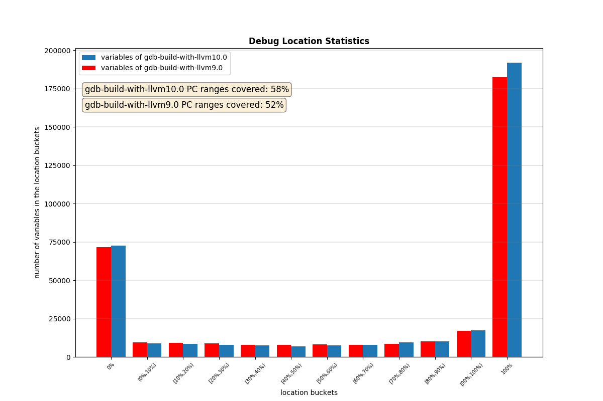

LLVM - Debug Location Quality
This page contains the statistics about Debug Location in optimized code generated by various versions of LLVM.
We use llvm-locstats tool for that purpose (please see llvm-locstats tool).
Test bed: binutils-gdb (HEAD at 832a580781; compiled with -g -O2)
LLVM 6.0 Release
Location Coverage Graphs
$ llvm-locstats --draw-plot gdb-build-with-llvm6.0

LLVM 7.0 Release
Location Coverage Graphs
$ llvm-locstats --draw-plot gdb-build-with-llvm7.0
$ llvm-locstats --compare gdb-build-with-llvm6.0 gdb-build-with-llvm7.0

LLVM 8.0 Release
Location Coverage Graphs
$ llvm-locstats --draw-plot gdb-build-with-llvm8.0
$ llvm-locstats --compare gdb-build-with-llvm7.0 gdb-build-with-llvm8.0

LLVM 9.0 Release
Location Coverage Graphs
$ llvm-locstats --draw-plot gdb-build-with-llvm9.0

$ llvm-locstats --compare gdb-build-with-llvm8.0 gdb-build-with-llvm9.0

LLVM 10.0 Release
Location Coverage Graphs
$ llvm-locstats --draw-plot gdb-build-with-llvm10.0

$ llvm-locstats --compare gdb-build-with-llvm9.0 gdb-build-with-llvm10.0

GCC 9 Release
Location Coverage Graphs
$ llvm-locstats --draw-plot gdb-build-with-gcc-9

$ llvm-locstats --compare gdb-build-with-llvm10.0 gdb-build-with-gcc-9